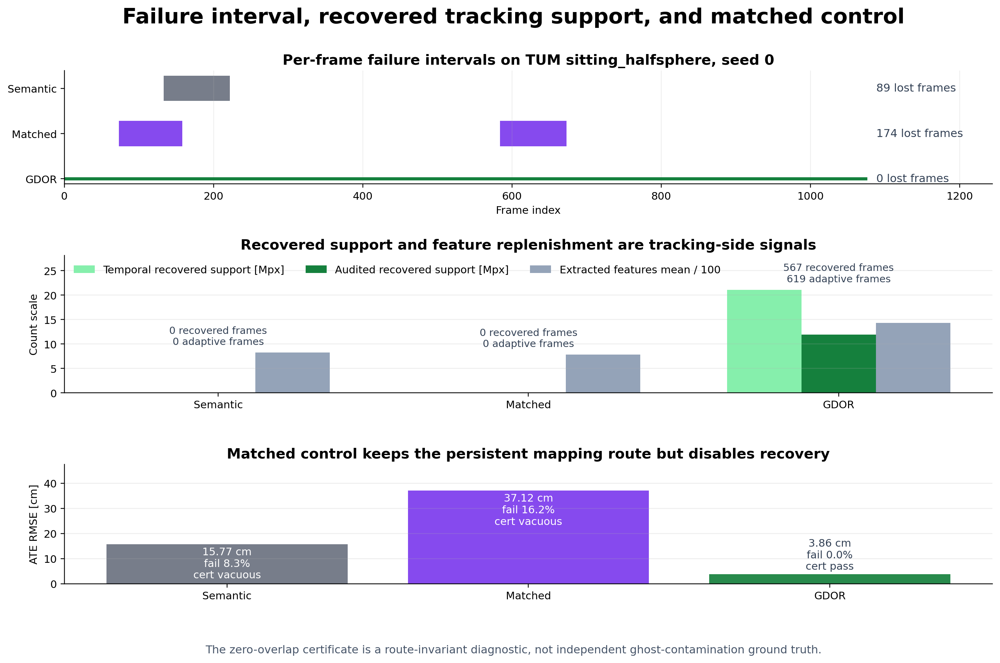
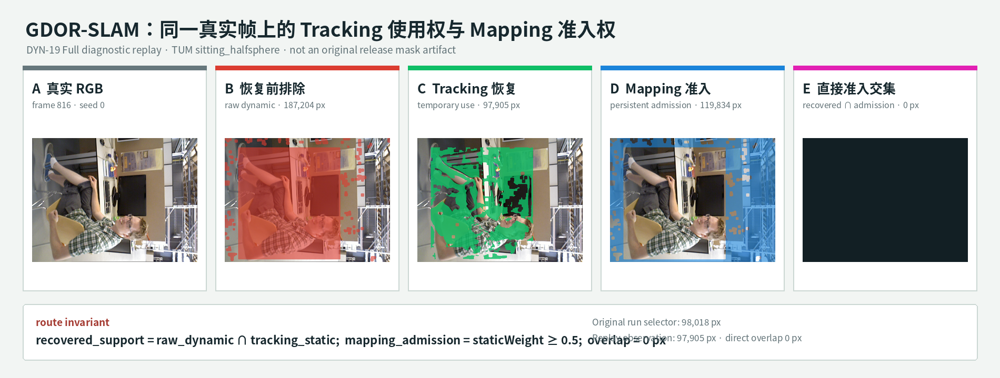
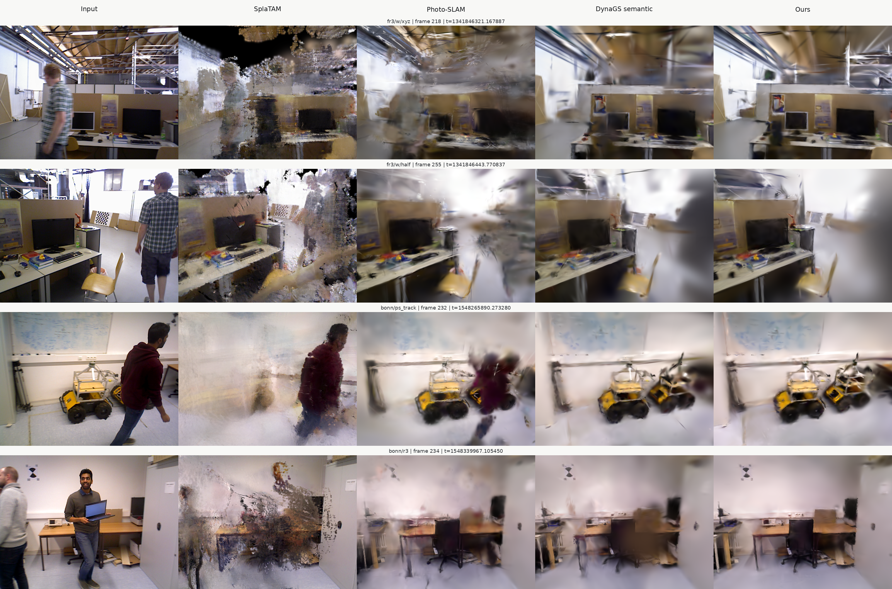

GDOR-SLAM
Guarded Dynamic Observation Recovery：恢复 tracking 支持，但不授予长期地图写入权。
不是看一个平均值，而是逐层回答六个问题
问题存在吗？
Semantic 全排除是否会在困难片段丢失 tracking 支持？
恢复能救吗？
Full 是否降低严重失败，并在多 seed 下改善主结果？
是不是其他设置？
MapMatched 降低 mapping-side 设置差异带来的混淆。
机制怎么变化？
Ordered ablation 描述固定添加顺序，不做独立因果归因。
路由真的安全吗？
Full 与 Full-NoM 的 certificate 正负对照验证准入边界。
下游地图如何？
共同视角检查隔离策略是否造成静态区域建图退化。
动态区域全部屏蔽，在困难片段会让 Tracking 缺少支持
Semantic · Bonn crowd2
42.500 cm全排除策略出现严重 tracking failure。
MapMatched · TUM sitting_halfsphere
36.775 cm即便采用更匹配的保守路由，仍存在关键失败区间。

这一页只证明“问题值得解决”：硬排除在部分动态场景中会损失可用定位支持。
需要时借用可信观测，但不把临时使用权变成地图写入权
保守候选池
语义与运动线索先排除可疑区域，并保留恢复前 raw mask。
受限 Tracking 恢复
Tracking 风险触发后，只有通过 temporal depth 与 residual flow 的候选才临时使用。
Persistent admission blocked
Mapping 继续使用恢复前权重；恢复像素不直接参与 Gaussian 初始化、更新或 densification。
绿色像素可以临时服务 Tracking，但不能直接变成蓝色地图证据

TUM sitting_halfsphere · seed 0 · processed frame 816。该页来自 Full 配置的顺序诊断回放；检查的是同帧直接准入，不是原始 release mask，也不是独立真值下的“零 ghost”证明。
完整方法是否有效，以及每一步实际跑出了什么结果
主实验：完整方法和两个对照
| 配置 | Mean ATE ↓ | 用途 |
|---|---|---|
| Semantic | 10.119 cm | 全部排除动态区域 |
| MapMatched | 7.392 cm | 尽量对齐写地图规则 |
| GDOR Full | 4.930 cm | 完整恢复方法 |
最明显的失败恢复
Bonn crowd2：42.500 → 11.080 cm
TUM sitting_halfsphere：36.775 → 4.864 cm
逐步消融：按固定顺序加功能
| 配置 | Mean ATE ↓ | 相对上一步 |
|---|---|---|
| T+M | 3.859 cm | 加入 temporal depth |
| T+F+M | 6.377 cm | 加 flow 后上升 |
| T+F+R+M | 4.907 cm | 加 risk 后下降 |
| Full（再加 A） | 4.930 cm | 完整安全版本 |
T=temporal depth · F=flow · R=risk · A=adaptive FAST · M=mapping isolation
端到端结果支持恢复路径能挽救严重 Tracking failure
Bonn crowd2
42.500 → 11.080 cm最强 Semantic failure recovery。
Full 变好，是因为恢复了背景像素，还是仅仅改了写地图的规则？
Semantic
不恢复背景像素，继续使用原来的定位和写地图规则。
MapMatched
仍不启用完整恢复，但把“哪些像素能写进地图”的门槛尽量调成和 Full 一样。
GDOR Full
保持相同的写地图门槛；定位困难时，再临时找回可信背景像素帮助定位。
| 比较 | MapMatched | Full | Median | Cell W/T/L | Seq W/T/L |
|---|---|---|---|---|---|
| 对齐写图规则后 | 7.392 cm | 4.930 cm | +0.016 cm | 16/0/14 | 4/0/6 |
机制链能观察，但目前不能独立归因
- T · Temporal depth寻找与背景深度支持一致的候选。
- F · Residual flow拒绝无法由相机运动解释的独立运动。
- R · Risk triggerTracking 吃紧时才启用短暂恢复。
- A · Adaptive FAST按 Tracking 状态补充特征预算。
用 Full-NoM 故意拆掉安全锁，验证 certificate 不是形式检查
GDOR Full
恢复支持未通过受审计路径获得 persistent map admission。
Full-NoM
关闭隔离后，90,790,462 个 recovered-support pixels 获得地图准入。
安全隔离没有造成当前共同视角下的静态区域退化
| Comparison | Mean gain | Median | W/T/L | 可支持结论 |
|---|---|---|---|---|
| Full vs Semantic | +0.897 dB | +0.544 dB | 9/0/3 | 有限 preservation 改善 |
| Full vs MapMatched | +0.773 dB | +0.515 dB | 11/0/1 | 有限 preservation 改善 |
定性结果用于观察现象，不替代真值

外部方法数字、公开 checkpoint 与本地 protocol-matched 结果保持来源隔离；图像对比不承担“零污染”证明。
整体设计有用、路由规则有效；独立因果与零污染仍待补证
- ✓ 硬排除在部分场景存在严重 Tracking failure
- ✓ Full 能挽救关键 failure regime
- ✓ Full / Full-NoM 支持 route invariant 与负对照
- ✓ 当前共同视角下未观察到 static preservation 退化
- × MapMatched 不是严格单变量控制
- × Ordered ablation 不证明独立模块因果效应
- × Proxy ghost / completeness 不等同独立真值
- × 尚非官方 DyPho-SLAM protocol-matched superiority
当硬排除导致 Tracking 失败时，
谨慎借用观测，但守住地图准入边界
证据链支持 guarded recovery、failure-regime rescue 和可审计的 separate tracking/mapping routing；结论强度与实验边界保持一致。